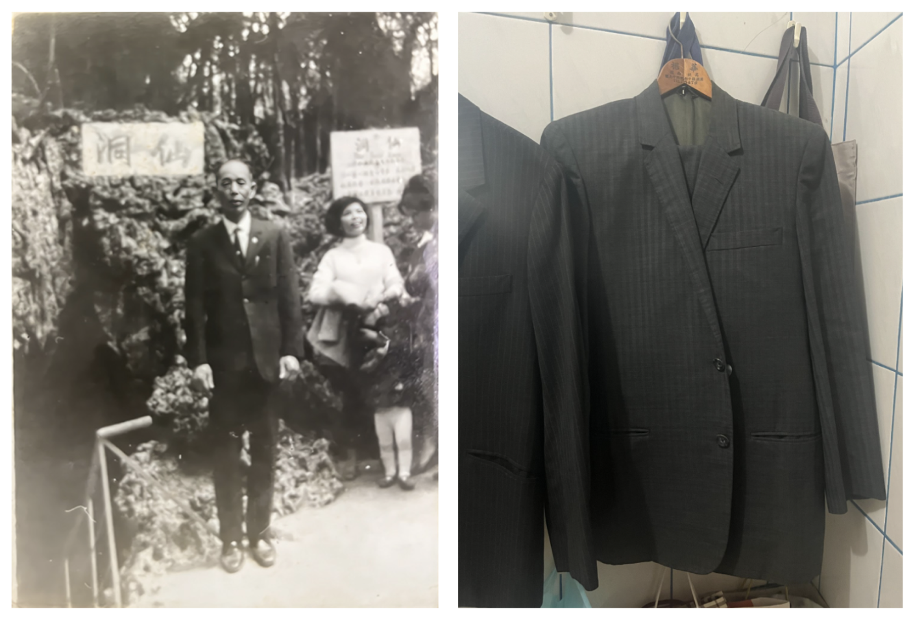
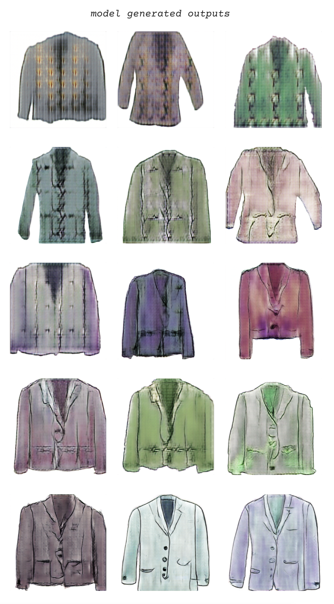

Christine Liao

The project started with a photo of a suit jacket made by my grandfather, who was a tailor and whom I have never met. There are very few photos and objects left from him. I created a digital drawing of the jacket he designed and also drew my own design to create the dataset. The project was not to recreate or to recover the missing relationship. AI makes visible the gap between his tailoring practice and my inexperience. The jackets generated by AI represent the impossible and the imagery space the missing relationship brought.
